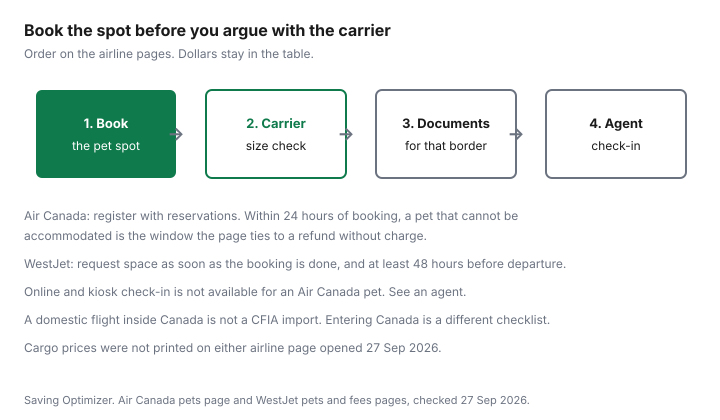

Pets · Canada
Flying With a Pet in Canada: Air Canada and WestJet Pet Fees and Rules
The surprise is usually the second direction, the carrier that does not fit the seat, or a spot that was never booked. This page uses Air Canada’s pets page and WestJet’s pets page and service-fees page, all checked 27 Sep 2026. Cargo prices were not on those pages. Nothing here is a fare quote. Confirm the amount before you pay. There is no affiliate offer on this page.
Key takeaways
- Air Canada cabin, one way: CA/US $50 to $60 within Canada and Canada/United States, and CA/US $100 to $120 international. Checked: CA/US $105 to $126, and CA/US $270 to $324 international.
- WestJet pets in the cabin: $50 to $59 within Canada and the United States, and $100 to $118 outside Canada and the United States. Checked: $100 to $118, and $200 to $236. The fees page says pet fees apply in both directions.
- Air Canada cabin carriers must be soft-sided from 1 June 2025. WestJet’s cabin kennel line is 41 cm by 21.5 cm by 25.4 cm. Checked animals need a hard-sided kennel on both airlines.
- Both airlines limit how many pets fly, and both tell you to add the pet before departure. Air Canada’s refund-without-charge window, if the pet cannot be accommodated, is tied to registering within 24 hours of booking. WestJet tells you to request space at least 48 hours before departure.
- A trip inside Canada is not an import. Entering Canada is the CFIA guide. A dog going to the United States is the CDC snowbird guide.
In-cabin vs checked vs cargo: what each airline allows
Air Canada’s cabin is a cat or a small dog in a soft-sided carrier under the seat, one animal per passenger. The animal must be able to stand, turn around, and lie down, and no part of the animal may stick out.
You cannot take that carrier into the cabin if you are an unaccompanied minor, if you sit in an exit or bulkhead row, if a medical device has to go under the seat, or if you are in Premium Economy, because that cabin’s layout does not allow the carrier to be stowed. From 1 June 2025 the cabin carrier has to be soft-sided. Carriers with a rigid window that are worn on the back are not permitted. Pet strollers and car seats are checked baggage, not a second cabin item.
For fares other than Economy Basic, Air Canada says the pet in its carrier is in addition to one personal item and one carry-on bag. On certain Economy Basic itineraries the pet plus one personal item is what you may bring. The pet still has to go under the seat. Checked cats and dogs travel in the baggage compartment on Air Canada or Air Canada Rouge, and on Air Canada Express operated by Jazz. A flight marketed by Air Canada and operated by a codeshare partner does not allow the pet. Pet carriers are not permitted on Air Canada Jetz. In the hold, the kennel is hard-sided, not collapsible and not wire, leak-proof, and large enough for the animal to stand, turn, and lie down. Two fully weaned puppies or kittens from 12 weeks to 6 months, same species, may share a kennel, and the fee is charged twice. More than two pets means contacting Air Canada Cargo between 14 and 7 days before travel.
WestJet’s cabin accepts birds, cats, and dogs, one per guest and one per kennel. The kennel is soft-sided, leak-proof, secure, and ventilated, and it is not a duffle. The animal’s head may not stick out. The kennel counts in the carry-on allowance. On routes where UltraBasic guests may not bring a carry-on bag, WestJet still allows an empty kennel or a pet in a kennel in addition to the personal item. Pets are not accepted in Business cabin on the 787. Checked species on the page include birds, cats, chinchillas, dogs, guinea pigs, hedgehogs, and rabbits. Kennel counts in the hold are three on a 737 including the MAX, two on a 787, and one on a Dash 8. Pets accepted per guest on those aircraft are six, four, and two. Two animals of the same species, up to 14 kg each, may share a kennel. Pets are not accepted on itineraries that include flights operated by codeshare or interline partners. An animal travelling alone is cargo. WestJet says manifested cargo is mandatory for pets destined for London Heathrow, and it prints a cargo phone number, 1-866-952-2746, without a price.
Air Canada Cargo is the path when the pet travels alone or the kennel exceeds 45 kg or 292 cm linear. The pets page tells you to contact Air Canada Cargo. It does not print an AC Animals rate. Do not copy the checked-baggage fee into a cargo quote.
Fees and carrier size/weight rules (from airline pages, dated)
Air Canada labels the cabin and checked amounts as a charge for one-way travel. A return with the pet on both flights is two of those charges.
At the ends of the cabin range inside Canada that is $50 plus $50, or $60 plus $60. The range exists because the page is covering more than one tax outcome, not because this site averaged fares. The checked table’s own footnote says fees are inclusive of a minimum 0 percent to a maximum 18 percent tax depending on the itinerary. A sentence above that table says 0 percent to 20 percent. Both sentences were on the page. Use the figure the airline shows before you pay.
WestJet’s fees page says fees are charged in Canadian or U.S. dollars depending on where the trip starts, that GST applies to itineraries that start in Canada, and that pet fees apply to both directions. The pet lines are printed as ranges: $50 to $59 and $100 to $118 in the cabin, $100 to $118 and $200 to $236 checked. This page does not relabel those ranges as a single currency the fees page did not put on the pet lines. Two directions at the Canada and United States cabin ends are $100 and $118 if you double the printed ends. That is arithmetic, not a new quote.
Cabin dimensions are not one suitcase size. On Air Canada, the common narrow-body and wide-body economy limit in the chart is 40 cm wide, 43 cm long, and 20 cm high. The Dash 8-400, Embraer E175, CRJ900, and Landline line is 40 cm by 55 cm by 27 cm. Business class on the A330-300 and on the 777 and 787 is 21 cm wide, 41 cm long, and 28 cm high. WestJet’s under-seat line is 41 cm long, 21.5 cm high, and 25.4 cm wide, with a note that you may have to sit in a window seat and that under-seat space varies. Checked, Air Canada allows up to 292 cm length plus width plus height, and up to 45 kg pet and kennel combined. WestJet’s checked section prints 45 kg combined and a kennel line of 101 cm by 68 cm by 81 cm, wheels removed, hard-sided, with food and water containers on the door. A kennel that fails the stand-and-turn test can be refused on either airline.
| Airline | Cabin fee | Checked fee | Carrier limits | Restrictions on the page |
|---|---|---|---|---|
| Air Canada | One way. Within Canada and Canada/United States: CA/US $50 to $60. International: CA/US $100 to $120. | One way. Within Canada and Canada/United States: CA/US $105 to $126. International: CA/US $270 to $324. Checked footnote: inclusive of 0 to 18 percent tax. A sentence above the table says 0 to 20 percent. | Cabin soft-sided from 1 Jun 2025. Chart: 40 × 43 × 20 cm on the listed Airbus and Boeing types; 40 × 55 × 27 cm on Dash 8, E175, CRJ900, and Landline; business class on A330, 777, and 787 is 21 × 41 × 28 cm. Checked: hard-sided, up to 292 cm linear, up to 45 kg combined. | One cat or small dog in the cabin per passenger. Not in Premium Economy, exit, or bulkhead, and not with an unaccompanied minor or an under-seat medical device. Most cases: at least 10 weeks and fully weaned. Codeshare-operated flights: pet not allowed. Jetz: cabin carrier not permitted. |
| WestJet | Both directions. Within Canada and the United States: $50 to $59. Outside Canada and the United States: $100 to $118. Currency follows where the trip starts. GST on itineraries that start in Canada. | Both directions. Within Canada and the United States: $100 to $118. Outside Canada and the United States: $200 to $236. Animal travelling alone: contact WestJet Cargo. No cargo price printed. | Cabin: soft-sided, 41 cm long × 21.5 cm high × 25.4 cm wide. Checked section: hard-sided, 45 kg combined, and a 101 × 68 × 81 cm line. Wheels off. | One pet in the cabin per guest. Not in 787 Business. Younger than eight weeks: not accepted. Not on codeshare or interline-operated flights. Not to or from Barbados, Hawaii, Dublin, Jamaica, or the United Kingdom. Breed lists below. |

Booking: limited pet spots per flight
Air Canada tells you to book your own flight first, then contact reservations to register the pet on that flight. You will be asked for carrier dimensions and the pet’s weight and breed.
The page strongly recommends registering within 24 hours of booking so that, if the pet cannot be accommodated, the ticket is refunded without charge. After 24 hours, changes follow the fare’s change and cancellation fees. Pets that were not registered are not accepted at the airport. You cannot check in online or at a kiosk. Arrive a full 30 minutes before the recommended check-in time and see an agent. If you change the booking, the pet’s reservation has to change too.
WestJet says space can be reserved online or by phone, and that kennel fees are paid through the contact centre by credit card or Travel Bank. It limits the number of pets on each flight and says that if you do not request space 48 hours before departure, space may be gone and you may not be allowed to travel with the pet. Pre-booking is the only way the page offers to hold the spot. For a checked kennel, the recommended check-in is 120 minutes before a domestic departure and 150 minutes before an international one, and a pet may be denied if you check in less than 90 minutes before departure. The same page says agents may not take the pet more than 60 minutes before an international departure or 120 minutes before a flight to or from the United States. Those clocks are all printed. Read them against your airport, not as one number. At the gate, arrive at least 40 minutes before departure. Less than 10 minutes and you are denied boarding, pet or not.
Breed and seasonal restrictions
Air Canada does not put short-nosed dogs in the baggage compartment, because of heat stroke and breathing risk. The breed names on that part of the page are not listed here; check the airline page.
The page also says breeds it classifies as strong need a reinforced crate that is not plastic, with a metal, wire, or wood door. Those names are not listed here either. Use the lists on the airline page rather than a list from memory. In heat, pets may not be accepted in baggage when summer temperatures exceed 29.5°C, and the page prints destination blackouts, including some that run all year. In cold, from 1 November to 31 March, and any time the temperature is 0°C or below, cats and dogs under 4.5 kg are not accepted in baggage. The Embraer 175 does not take pets in baggage in that cold rule. The 737 MAX 8 does not take cats and dogs in baggage from 1 November to 31 March. From 18 December to 4 January, no pets are accepted as checked baggage or cargo. Separate Mexico-flight limits run from 14 September to 14 January. Cargo can still be discussed with Air Canada Cargo in winter. The page says so, without a price.
WestJet’s brachycephalic rule, for bookings after 4 July 2023, bars these cats from the baggage compartment: British Shorthair, Burmese, Exotic Shorthair, Himalayan, Persian, Selkirk Rex, and Scottish Fold. The dog list on that page is Affenpinscher, Brasileiro, Brussels Griffon, Boston Terrier, Boxer, all bulldogs, Bullmastiff, Cane Corso, Cavalier King Charles Spaniel, apple-headed Chihuahua, Chow Chow, Dogue de Bordeaux, English Toy Spaniel, Japanese Chin, Lhasa Apso, Neapolitan Mastiff, Pekingese, all pugs including the Chinese Pug, Shar-Pei, Shih Tzu, Staffordshire Bull Terrier, and Tibetan Spaniel. Mixes of those breeds are included. They must be booked as WestJet Cargo. Strong breeds, also for bookings after 4 July 2023, are not accepted as checked animals and need a CR82 crate via cargo: American Bulldog, American Staffordshire Terrier, Anatolian Shepherd (the page spells it “Shepard”), Bandog, Cane Corso, Caucasian Shepherd, Doberman, Dogo Argentino, Fila Brasileiro, all mastiffs, all pit bulls, Presa Canario, Rottweiler, Staffordshire Bull Terrier, and wolf-dog hybrids, including crosses. WestJet also says these breeds are restricted for travel into or through Ontario: Pit Bull Terrier, American Pit Bull Terrier, American Staffordshire Terrier, and Staffordshire Bull Terrier. That is the airline’s sentence. This page does not cover Ontario’s dog-owner statute, so it does not restate provincial law.
WestJet’s pets page has a holiday-restrictions heading for checked pets. No WestJet blackout calendar is printed here; check the dates on WestJet’s page. Heat is discussed as a reason a pet may be refused. A temperature number for WestJet heat was not on the sections that rendered. Do not copy Air Canada’s 29.5°C onto WestJet.
Documents for domestic vs international flights
Inside Canada, you are not importing the animal. You are still bound by the airline’s registration, carrier, age, and breed rules, and WestJet tells you to confirm entrance rules before you cross a provincial border.
The Ontario breed lines above are one example of a rule that is not a federal import form. A health certificate for a domestic hop is not given a form number on the airline pages. Ask the airline what it will look at for that city pair.
Landing in Canada from another country is a CFIA question: age, whether the animal is a personal pet or a commercial import, and the rabies status of the country you left. That checklist is the import guide. Air Canada says government veterinary officials may inspect the pet on arrival and that inspection fees may exist. It points to IATA for destination rules and tells you a clinic certificate may not be enough for the country you are entering. For a dog going to the United States, Air Canada cites CDC requirements effective 1 August 2024 and sends you to the CDC. This page does not copy those rules. They are the snowbird dog guide. The cost of owning the dog the rest of the year, and the vet bill if travel goes badly, are separate: annual dog costs and vet bills. Service dogs are a different product on both airlines. Use the airline’s accessibility page, not the pet-fee table.
Checklist
Write the direction, the airline, and the aircraft before you buy a carrier. Then work down the list. If a line is a cargo booking, stop and get a cargo price. This page does not have one.
| Step | What to confirm |
|---|---|
| Spot | Pet registered on that flight. Air Canada: within 24 hours of booking if you want the no-charge refund window the page describes. WestJet: request at least 48 hours before departure. |
| Carrier | Soft-sided in the cabin, hard-sided in the hold, dimensions for that aircraft, animal can stand and turn, wheels off if the page requires it. |
| Fee | The one-way or per-direction range for cabin or checked, times the directions the pet actually flies. Cargo priced by the cargo desk, not by this table. |
| Breed and season | Hold versus cabin versus cargo. Air Canada heat and winter dates. WestJet breed lists. WestJet holiday dates: check WestJet’s page. |
| Papers | Domestic: airline rules. Into Canada: CFIA. Into the United States: CDC, via the snowbird guide. Other countries: that country’s authority. |
| Airport | Agent check-in. Air Canada: 30 minutes earlier than the recommended time, no online check-in. WestJet checked: the 120, 150, and 90 minute lines above. |
Sources & date stamps
- Air Canada, Travelling with your pet, checked 27 Sep 2026. Cabin and checked fee ranges, soft-sided rule from 1 June 2025, carrier chart, age, booking window, heat at 29.5°C, winter and peak-travel dates, codeshare and Jetz limits. Breed name lists: check the airline page. Cargo price not printed. CDC noted as effective 1 August 2024, not restated.
- WestJet, Pets, checked 27 Sep 2026. Cabin and checked kennel rules, species, aircraft counts, age of eight weeks, breed lists for bookings after 4 July 2023, banned destination pairs, Ontario breed sentence as WestJet states it, cargo phone without a price. Holiday dates under that heading: check the airline page.
- WestJet, Service fees, checked 27 Sep 2026. Pet kennel fee ranges, both directions, GST on Canada-origin itineraries, currency depending on where the trip starts. Cargo priced only by contacting WestJet Cargo.
- CFIA import rules are not copied here. They are the import guide, from CFIA pages checked the same day.
Frequently asked questions
How much does Air Canada charge for a pet?
The Air Canada pets page checked 27 Sep 2026 prints a one-way cabin charge of CA/US $50 to $60 within Canada and between Canada and the United States, and CA/US $100 to $120 on international itineraries. Checked baggage is CA/US $105 to $126 for those Canada and Canada/United States trips, and CA/US $270 to $324 international. The checked-fee footnote says the range includes 0 to 18 percent tax, while a sentence above it says 0 to 20 percent, so use the amount on the fare. Cargo was not priced on that page.
Can my dog fly in the cabin with WestJet?
WestJet accepts dogs in the cabin, one pet per guest and per kennel, in a soft-sided kennel the animal can stand, sit, turn around, and lie down in. The cabin size line is 41 cm long by 21.5 cm high by 25.4 cm wide, and space under the seat varies by aircraft. Pets are not accepted in Business cabin on the 787 Dreamliner, a pet may not travel with an unaccompanied minor, and dogs younger than eight weeks are not accepted. The fees page prints $50 to $59 within Canada and the United States and $100 to $118 outside Canada and the United States, and it says pet fees apply in both directions.
What size carrier do I need?
It depends on the airline and the cabin. Air Canada requires a soft-sided cabin carrier from 1 June 2025 and prints different width, length, and height limits by aircraft, including a smaller business-class limit on the A330, 777, and 787. WestJet’s cabin line is 41 cm by 21.5 cm by 25.4 cm. Checked kennels are hard-sided. Air Canada’s checked maximum is 292 cm in linear dimensions and 45 kg combined. WestJet’s checked section prints 45 kg combined and 101 cm by 68 cm by 81 cm. If the animal cannot stand, turn, and lie down, both airlines say they can refuse the kennel.
Are some breeds banned from flying?
For bookings made after 4 July 2023, WestJet says listed short-nosed breeds cannot travel in the baggage compartment and must go as cargo, and listed strong breeds are not accepted as checked animals. The names are in this article. Air Canada also bars short-nosed breeds from the baggage compartment and requires a reinforced crate for breeds it classifies as strong; check Air Canada’s page for those name lists. WestJet also says it does not accept pets to or from Barbados, Hawaii, Dublin, Jamaica, or the United Kingdom.
What documents do I need to fly with a pet?
A flight inside Canada is not a Canadian Food Inspection Agency import. You still register the pet with the airline and meet that airline’s carrier rules. Entering Canada is the import guide on this site. Air Canada points to U.S. Centers for Disease Control and Prevention dog rules effective 1 August 2024 and does not restate them here; the snowbird guide is that trip. WestJet says you are responsible for entrance rules at each border, including Canada, and that the airline does not take on that compliance for you.
Researched and drafted with AI assistance and fact-checked against official Canadian sources. How we create content.